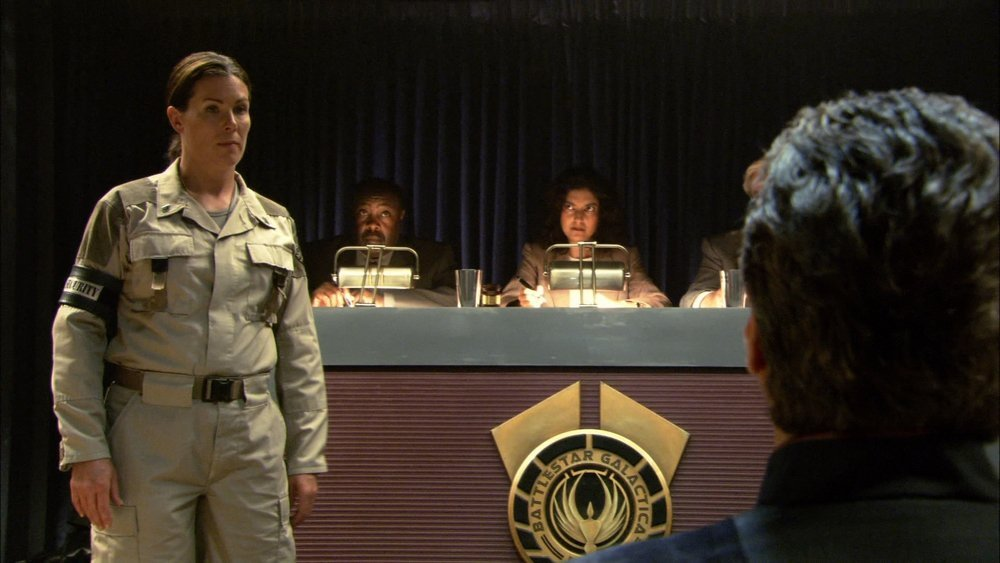

Trial Rules and Procedures
To ensure the principles of justice and equality are upheld during the investigation process, the following set of rules and procedures will be followed by the CDF Judiciary Committee in all cases:
- Each defendant in the investigation has the right to a lawyer to argue on his or her behalf. If the defendant does not have access or means to procure a lawyer or defender, they will be appointed one on their behalf by the CDF leadership.
- The defendant must be allowed to exercise his or her right under Article 23 of the Articles of Colonization. The defendant shall not be forced to testify against himself or herself.
- Military police shall be present at all investigation sessions in order to enforce the laws established and ensure both the Judiciary Committee and the Defendant adhere to the CDF Bylaws.
- Judiciary jurors shall be selected according to the defined procedure. These jurors must take an oath to uphold the law and ensure that the trial proceeds according to CDF Bylaws.
- Any jurors who are not able to fairly and justly rule on the trial must excuse themselves before the trial begins. Jurors who do not follow this procedure will be charged with criminal jury tampering.

Figure 8.2: A CDF Trial in progress